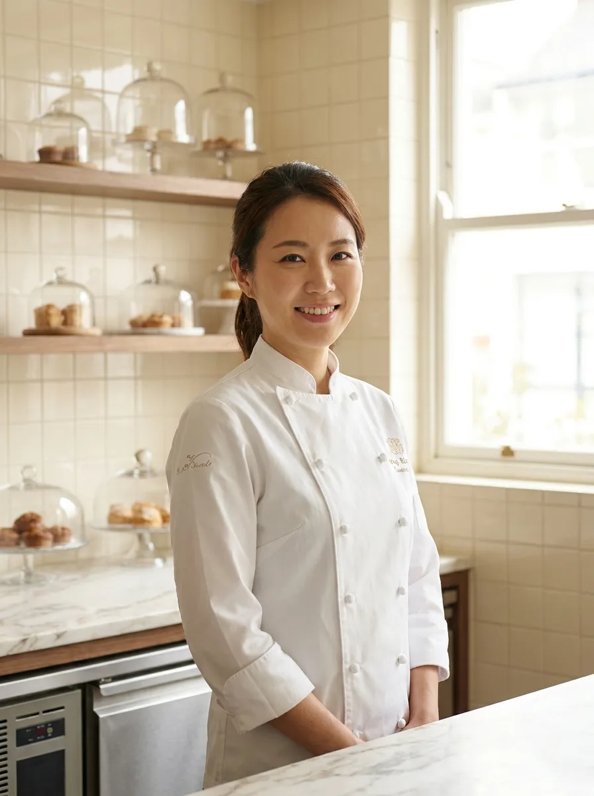
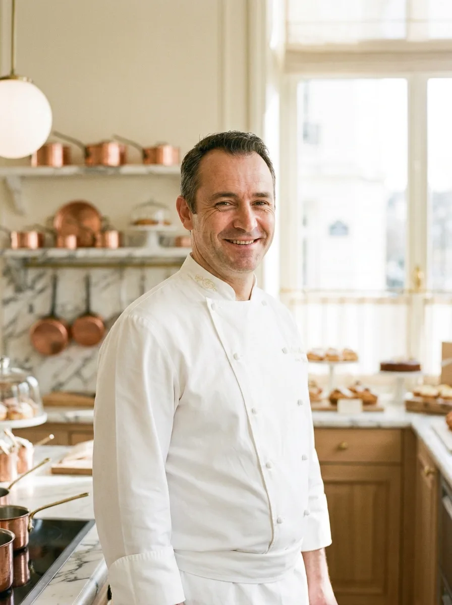
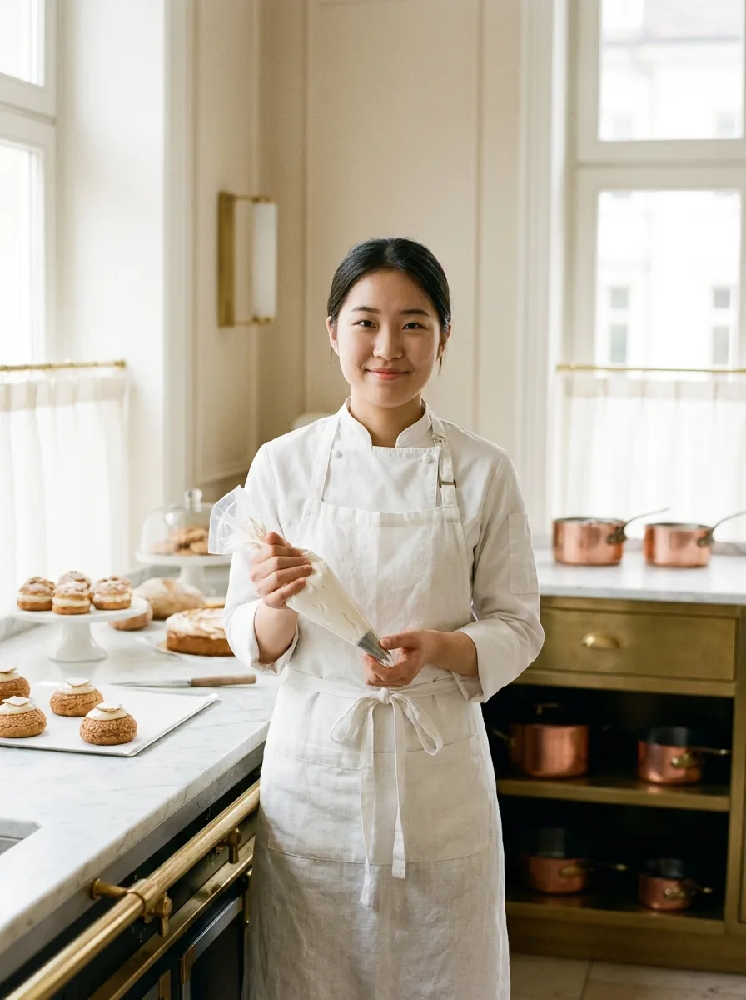
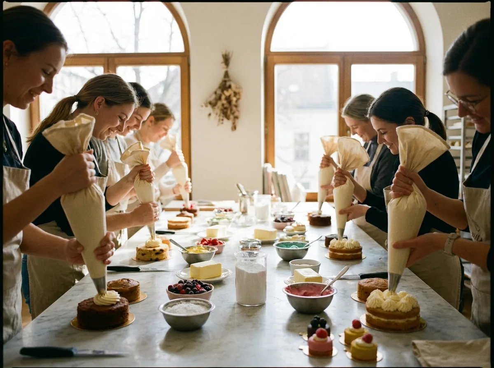

Notre Histoire
A story of obsession, craft, and the pursuit of beautiful things.

La Fondatrice
"In Paris, I learned that perfection
is not a destination — it is a practice."
Yuet 在台灣長大，從小對廚房有著說不清楚的迷戀。 十八歲那年，她揣著對甜點的痴迷，隻身飛往巴黎， 進入 Le Cordon Bleu 學習法式甜點工藝。
七年間，她走訪法國、義大利、日本的甜點工坊， 在大師的廚房裡磨礪技術，記錄每一個讓她震撼的味道。 2018年，她帶著這些積累回到台北， 以法式精工詮釋台灣的風土滋味，創立了玥見。
Philosophie
麵糊的溫度、打發的時機、糖漿的濃度—— 每一個細節都有精準的數字依據。 我們相信，藝術不排斥科學；真正的美，來自對精準的偏執。
我們選用台灣在地農家的烏龍茶、荔枝、玫瑰與鳳梨， 以法式技法轉譯台灣的土地滋味。 每一季的菜單，都是一封寫給台灣的情書。
玥見不使用任何半成品或預拌粉。 徝麵團、奶霜到裝飾，每一件甜點都在開放式廚房中透明製作。 因為我們相信，手的溫度，是機器永遠無法複製的。
L'Équipe
陳玥瑄 Yuet
Le Cordon Bleu Paris · 2011-2018
玥見的創辦人與靈魂人物。擅長將法式精工美學與台灣食材融合， 打造季節性限定系列甜點。每季親自規劃菜單，堅持不重複的創作精神。

Luc Beaumont
École Ferrandi Paris · 2015
來自里昂的法籍甜點師，專精於巧克力工藝與糖飾裝飾藝術。 2020 年加入玥見，負責客製蛋糕系列與節慶禮盒設計。

林品萱 Mei
輔仁大學 餐飲管理 · 深造東京
台灣本地培訓，曾在東京甜點名店學習和菓子工藝。 負責每日泡芙、可頌與維也納麵包系列， 以台灣食材詮釋日法交融的甜點風味。

Atelier
玥見每月舉辦精品甜點工作坊，由主廚親授法式甜點技巧。 小班制，最多八人，在開放式廚房中進行， 體驗職業甜點師的完整工作流程。
Milestones
2011 — 2018
巴黎習藝
創辦人 Yuet 負笈巴黎，就讀 Le Cordon Bleu，並在多家米其林餐廳甜點部門實習，深耕法式甜點工藝。
2018
玥見創立
返台後在台北信義區開設玥見，首季推出 12 件法台融合甜點，在社群引發熱烈迴響，第一個月即完售。
2020
法籍副主廚加入
里昂甜點師 Luc Beaumont 加入玥見，帶來巧克力工藝與糖飾技術，客製蛋糕系列正式推出。
2022
首屆法式甜點工作坊
推出每月工作坊課程，首期 48 個名額在兩小時內秒殺。成為台北頂尖甜點教學體驗的代名詞。
2024
台灣風土系列發表
與台灣各地農家合作，推出「風土系列」，以烏龍、荔枝、鳳梨、玫瑰等台灣食材為主軸，獲國際美食媒體報導。
Réservation
"Every visit is a quiet celebration."